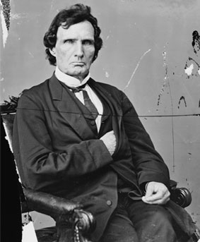

|
When Congress met in December of 1865, the Republicans had a large majority of
the seats in both chambers (42 to 11 in the Senate, 151 to 42 in the House).
Initially the Congress appeared inclined to accept Presidential Reconstruction,
merely supplementing it with further demands from the former Confederates and
further protection for the freedmen. This option seemed a real possibility, for
many Republican Congressmen were concerned about the effects of an irrevocable
split with the man who was the chief executive as well as the highest elected

William Pitt Fessenden
|
official in their party. The Joint Committee on Reconstruction was initially
conciliatory and its chair, William Pitt Fessenden, was in constant
communication with the president. Initially, Congress ignored more radical plans
for the South and instead passed two bills which were friendly to the
president's plans. The first extended the life of the Freedmen's Bureau while
circumscribing its authority and also limited the residence of individuals on
lands granted to them by Sherman's General Order #15 to three more years. The
second bill, known as the Civil Rights Act of 1866, extended civil rights and
legal equality to blacks but made their protection the responsibility of the
states. Congressional Republicans were shocked when Johnson vetoed both the
bills, and attacked the Congress, saying they had absolutely no authority in
reconstructing the South. This was a grave mistake on Johnson's part. He was not
as savvy as Lincoln when it came to discerning the political differences between
the members of the Republican party. As such, Johnson apparently did not realize
that Congressional Republicans were in fact heavily divided over the
Reconstruction issue, and that his base of support was more tenuous than it
seemed.
Moderate and Radical Republicans
In fact, there was a wide spectrum of opinion about Reconstruction among
Congressional Republicans. On one side was the moderates, who generally
supported Johnson and his plans for Reconstruction, and wanted to heal the
nation's wounds as soon as possible. They felt that the only issue was to
|

Thaddeus Stevens
|
formulate the terms the Confederates needed to agree to for readmission, which
they envisioned as being some sort of legal protection for freedmen, exclusion
of certain key Confederates from political office and suffrage for some or all
black males. In essence, they saw Reconstruction as a set of terms to be
negotiated like a treaty, not a process of change to be imposed.
The primary opposition to the moderates came from the Radical Republicans,
who were led by Charles Sumner in the Senate and Thaddeus Stevens in the House.
The Radicals felt that the North had an excellent opportunity to change the
institutions and attitudes of the South. They wanted to put the South under
military control, and the Southern states to be treated as territories. The
Radicals also wanted to establish a system of public education, enact laws
protecting freedmen, grant suffrage to black males and confiscate land from
rebels and give it to freedmen.
The Fourteenth Amendment
Prior to Andrew Johnson's political blundering, the moderates comprised the
majority of Congress and were in firm control. However, after the president's
declaration that Congress had no business involving itself in Reconstruction,
the Radicals began to gain support, and the Congress started considering the
possibility of repudiating presidential Reconstruction; completely overturning
what Johnson had done and starting over. Nonetheless, the moderates still
retained control and in 1866 proposed the fairly conservative Fourteenth
Amendment. The Fourteenth Amendment had three basic provisions. The first
reiterated the legal and civil rights that had been set forth in the Civil
Rights Act of 1866, most notably granting African Americans citizenship. The
second provision said that if a state admitted black voters, those voters would
be reflected in the apportionment of Congressional representatives. It was hoped
among moderates that this would motivate states to give the vote to blacks
without forcing them. The final provision of the Fourteenth Amendment said that
anyone who had held office before the war and then supported the Confederacy was
forever barred from holding political office. This was the only part of the
amendment that the Radicals felt had any meaning, and they were insistent on its
inclusion.
Though the Fourteenth Amendment was essentially in harmony with Johnsonian
Reconstruction, the president didn't like it, and attacked Congress. He also
began trying to organize his own political party, made up of individuals
committed to his policy. Johnson hoped to take whatever moderate Republicans he
could attract and unify them with the Northern Democrats and those Southerners
who had supported him. He envisioned a true National Union party,
cross-sectional in character and loyal to him. Johnson did everything he could
to realize this very powerful and potentially realistic vision, using patronage
power mercilessly and making a series of inflammatory speeches in the North
known as the "Swing Round the Circle". This unified the Republican opposition
and they organized feverishly to defeat him. The whole conflict reflected the
basic difference between Johnson and the Radicals. Johnson felt the Republicans
had to change to accommodate the South and make them feel comfortable within the
party. The Radicals felt that the Southerners were the ones who had to change.
Like President Johnson, the Southern states also opposed the Fourteenth
Amendment. Had they complied with it, the radical Republicans would almost
certainly have been undermined, since newly elected Southern Representatives,
along with Northern Democrats, would have constituted a majority in Congress.
However, all Southern legislatures voted overwhelmingly against it.
The Radicals Gain Control
The actions of President Johnson and the former states of the Confederacy
played right into the hands of the Radical Republicans. Johnson's actions
angered many moderates, who were won over to the Radical camp as a result. Other
moderates were convinced to join the Radical coalition because they felt that
Southern obstinacy had demonstrated that the former Confederates were not
willing to change on their own. This allowed the radicals to gain passage of the
Reconstruction Act of 1867. The bill divided the South into five military
districts, with supreme authority vested in the military commanders of each
district. African Americans were to be registered to vote, while leading
Confederates were disqualified from holding office and disenfranchised. States
desiring readmission the Union were required to ratify the Fourteenth Amendment
and to write new Constitutions that guaranteed black suffrage (which was
further solidified with the adoption of the Fifteenth Amendment in 1870).

A ticket for entry into the Senate's impeachment hearings
|
The bill was far more sweeping than what the moderates had initially
proposed. It had most of the radical measures incorporated into it, and the
terms were mandatory, rather than voluntary. Further, the military was given
ultimate authority and the notion of states rights was completely overridden, as
state boundaries were effectively erased. Finally, it enfranchised black men.
However, because the Act's passage depended on support from moderate
Republicans, it also contained several conservative elements. In particular, the
Reconstruction Act of 1867 lacked two elements that the Radicals considered
crucial. First, the Johnson governments were not dispensed with. Second, the
restrictions on the power of former Confederates were essentially inadequate.
President Johnson vetoed the Reconstruction Act and was overridden. He then
tried to thwart the bill in a variety of ways; by removing military commanders
who enforced the act too strongly, by frequently challenging the authority of
the law, and by trying to influence Ulysses S. Grant, who was in charge of all
the United States' armies. This infuriated Congress even more. Johnson had
inspired talks of impeachment as early as 1866 and in early 1867, Congress had
passed the Tenure of Office Act, an act of questionable constitutional legality
that forbade the president from removing members of his cabinet without Senate
consent. The Tenure of Office Act was designed to protect Congressional
supporters in the cabinet, especially Edwin Stanton, who was very sympathetic to
the Radical Republicans. In February 1868, shortly after his veto of the
Reconstruction Act was overridden, Johnson forced Stanton from office and
replaced him with Grant. Congress chose to use this violation of the law as an
excuse to bring Johnson up on articles of impeachment. The president avoided
conviction by one vote.
Source: Christopher Bates for the History 139A website
|